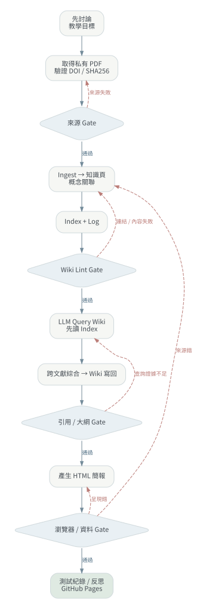

討論教學目標
輸入：HW9 舊網站與使用者選擇的 HRV／壓力研究。
輸出：本次教學目標、10 篇資料的界線。
檢查：主題能讓初學者循序理解。
03 / KNOWLEDGE PROCESS
這次最大的差異不只是多了 Wiki，而是加入有通過條件的工作節點：錯誤會回到造成問題的位置，避免一再對錯誤的來源產生簡報。
實線代表正常流程、虛線代表失敗回圈；圖面由儲存庫內 docs/workflow.dot 生成，另附 Mermaid 文字版。可水平捲動放大查看。

EXECUTABLE GATES
輸入：HW9 舊網站與使用者選擇的 HRV／壓力研究。
輸出：本次教學目標、10 篇資料的界線。
檢查：主題能讓初學者循序理解。
輸入：10 篇 PDF。
輸出：可擷取文字、頁數、SHA256、DOI。
檢查：頁面可讀、欄位完整，否則返回來源取得。
輸入：解析內容與讀稿。
輸出：10 篇來源頁、10 個概念頁、雙向關聯。
檢查：每筆主張有來源、摘要頁碼與避免過度推論。
輸入：Wiki 來源、概念與關聯。
輸出：由問題至結論的 14 張教學內容。
檢查：非研究讀者也能理解、概念次序合理。
輸入：有來源 ID 的 slide-plan.json。
輸出：可直接瀏覽的 slides.html。
檢查：引用 S01–S10 均指向真實 Wiki 頁。
輸入：網站與自動化檢查。
輸出：通過／失敗紀錄與可部署專案。
檢查：Wiki 搜尋、翻頁、原有 HW9 資產與 GitHub Pages 路徑。
無法擷取文字、頁數不足、雜湊不符或 DOI 遺漏時，拒絕標記為成功 ingest。重新確認原 PDF 再解析。
本機工具：tools/ingest_local.py概念若引用不存在來源、雙向關聯遺漏、證據頁碼超出頁數，檢查器直接失敗，不讓後續簡報沿用錯誤資訊。
本機工具：tools/validate_project.py若來源 ID 錯誤，回到 Wiki／slide plan；若按鈕、版面或語法錯誤，回到 HTML／JavaScript，修改後再測。
本機工具：tools/run_workflow.py程式檢查可阻止失敗版本通過；涉及科學主張的修改要先閱讀來源再重新生成。這裡的「loop」包含明確的返回路徑與重測，不表示公開網頁會自行呼叫模型。
可於 GitHub Actions 重新執行KARPATHY-STYLE WIKI
本次 LLM 從 Wiki 閱讀兩篇來源與相關概念頁，將跨研究整合寫回 Wiki，並修改第 7、10 張教學簡報。檢查 查詢紀錄 與 整合頁。
Python 檢索工具不會自行呼叫 LLM；網站仍是靜態展示。科學性矛盾與解釋須由模型提出查核點，再與原始論文核對。
下載專案後執行 python tools/run_workflow.py 檢查 Wiki 與程式結構。若有原始 PDF（僅本機）可執行 python tools/ingest_local.py /path/to/papers --check 再核對雜湊、頁數及可解析字數。完整測試紀錄請見 Evaluation。